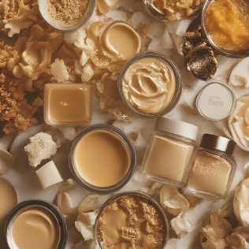
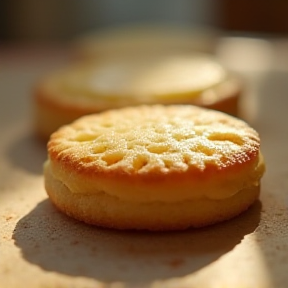

SoundCloud
Accueil
Flux
Bibliothèque
Téléverser
Se connecter
Créer un compte
Lian
Lian Degrai · France · Membre depuis 2019
Suivre
Station
Partager
Lien copié !
Bloquer
Plus...
Tout
Titres
Albums
Titres populaires

Beurre Doré (VIP)
1.84M écoutes
Ne comptez jamais sur ce Beurre (Remix)
910k écoutes

Petit Beurre sur ma langue V3
620k écoutes
Artistes ayant joué avec
Degrelion
Titres
A → Z
Z → A
Plus écoutés
Plus récents
Albums
Sans Album
Lian
Album · 2026 · 3 Titres
Code Route (Y2K Ver.)
Lire tout l’album
▶️
Petit Beurre sur ma langue V3
🔊 12k · ❤️ 540 · 🔁 1.1k · 💬 457
▶️
Beurre Doré (VIP)
🔊 1.8M · ❤️ 120k · 🔁 35k · 💬 190
▶️
Ne comptez jamais sur ce Beurre (Remix)
🔊 330k · ❤️ 40k · 🔁 10k · 💬 52
⏮️
⏸️
⏭️
📝 Lyrics
🔊
➕
♡
Lyrics
✖
0:00
0:00